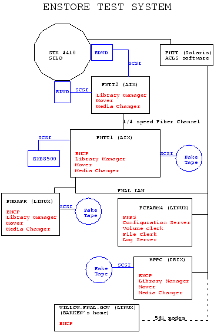

(also available in Postscript)
Some of the interesting points in the test stand:
The test was run with a mover on fntt2, a RS6000/F50-a fast modern machine, writing to a Redwood tape drive and encp on fntt1, a RS6000/370 -a slow (circa 1992) machine reading from old disk drives. During this test the data rates were limited by the memory FNTT1 which was paging during the transfer.
The test was also run entirely on fntt2 i.e. over a local tcp/ip connect not over an external network. During this test the limit was the speed of the disk from which encp was reading.
TEST FILE SIZE DATA XFR TIME RATE TOTAL TIME RATE
Network 1GB 851sec 1.2MB/sec 932sec 1.1MB/sec
Local .5GB 131sec 3.8MB/sec 210sec 2.4MB/secIn the above table the DATA XFR TIME and ATE are the times to transfer the data not including tape mount times (~50 sec). The TOTAL TIME and RATE is from the start of encp until it is notified the data is on tape. Logs of the network transfer and the local transfer show all of the detail.
There will ultimately be bottle necks in the network data transfers and in the per file over head which is currently about 80 seconds (50 seconds of which is tape mount time).
TIMINGS FOR NETWORK COPY TO TAPE fntt1> ecmd encp --list /data4/d4-1gb /pnfs/enstore/redwood-tests/x8 Checking /data4/d4-1gb dt: 0.109719991684 cum= 0.11406493187 Checking /pnfs/enstore/redwood-tests/x8 cum= 0.120937943459 dt: 0.350533008575 cum= 0.472744941711 Storing local info cum= 0.476928949356 dt: 0.0382910966873 cum= 0.519853949547 Requesting callback ports cum= 0.5253469944 fntt1.fnal.gov 7600 dt: 0.0354549884796 cum= 0.567543029785 Calling Config Server to find redwood50.library_manager cum= 0.574772000313 fnhpssc-fc 7516 dt: 0.0254299640656 cum= 0.605423927307 Sending ticket to redwood50.library_manager cum= 0.61233496666 Q'd: /data4/d4-1gb redwood50 family: test bytes: 1073741312 dt: 0.126762032509 cum= 0.749526023865 Waiting for mover to call back cum= 0.754024982452 fntt2.fnal.gov 7600 cum= 52.1609499454 Sending data cum= 52.1665359735 bytes: 1073741312 dt: 850.942865014 = 1.20337046566 MB/S cum= 903.121601939 Waiting for final mover dialog cum= 903.12666893 dt: 27.5477809906 cum= 930.678053975 Adding file to pnfs cum= 930.683827996 dt: 0.703927993774 cum= 931.390488982 Adding transaction log to pnfs cum= 931.39765501 dt: 0.398756980896 cum= 931.79796195 pnfs/enstore/redwood-tests/x8 : 1073741312 bytes copied to 000005 in 931.394680023 seconds at 1.0994258698 MB/S cum= 931.822350979
TIMINGS FOR "LOCAL" COPY TO TAPE fntt2> ecmd encp --list /data/d2 /pnfs/enstore/redwood-tests/x7 Checking /data/d2 dt: 0.030956029892 cum= 0.0315579175949 Checking /pnfs/enstore/redwood-tests/x7 cum= 0.032133936882 dt: 0.240665078163 cum= 0.273137927055 Storing local info cum= 0.273504018784 dt: 0.0108720064163 cum= 0.284879922867 Requesting callback ports cum= 0.285327911377 fntt2.fnal.gov 7600 dt: 0.0146160125732 cum= 0.300705909729 Calling Config Server to find redwood50.library_manager cum= 0.301414012909 fnhpssc-fc 7516 dt: 0.011283993721 cum= 0.313316941261 Sending ticket to redwood50.library_manager cum= 0.313857913017 Q'd: /data/d2 redwood50 family: test bytes: 524288000 dt: 0.0346219539642 cum= 0.349470019341 Waiting for mover to call back cum= 0.349876999855 fntt2.fnal.gov 7601 cum= 57.2415390015 Sending data cum= 57.2433879375 bytes: 524288000 dt: 130.913884997 = 3.81930457575 MB/S cum= 188.159516931 Waiting for final mover dialog cum= 188.160026908 dt: 21.5957429409 cum= 209.75623095 Adding file to pnfs cum= 209.75672102 dt: 0.422170996666 cum= 210.179323912 Adding transaction log to pnfs cum= 210.179908991 dt: 0.202365994453 cum= 210.382684946 /pnfs/enstore/redwood-tests/x7 : 524288000 bytes copied to 000005 in 210.179669023 seconds at 2.37891662949 MB/S cum= 210.384336948 fntt2>